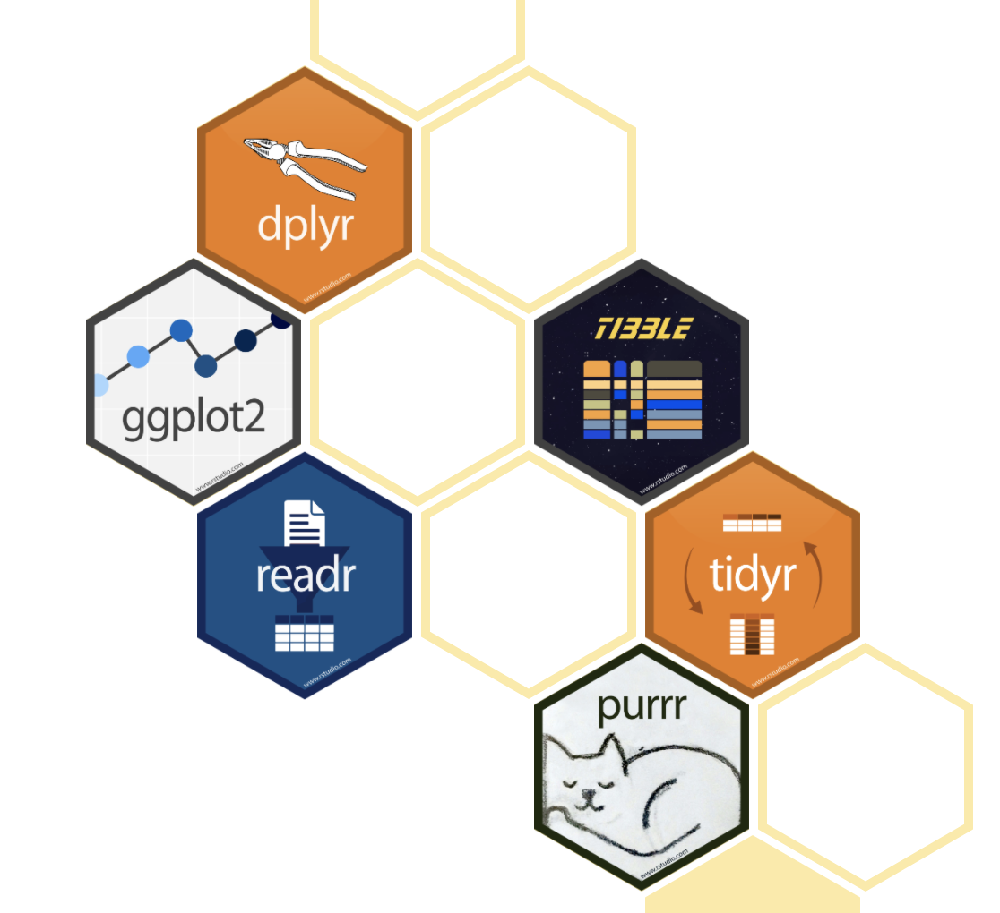

The tidyverse way
Intro to the tidyverse
The Tidyverse is a coherent system of packages for data manipulation, exploration and visualization that share a common design philosophy.
Advantages of the tidyverse
- Consistent functions.
- Workflow coverage.
- A parsimonious approach to the development of data science tools.


Tidyverse Principles
tibblesas main data structures.- Tidy data where rows are sigle observations and columns the variables observed.
- Piping the outputs of tidyverse functions as inputs to subsequent functions.
install.packages(c("tibble", "dplyr"))tibbles
tibblesare one of the unifying features of the tidyverse, and are the tidyverse version of a data.frame (I will use them interchangeably in the rest of the text).
Features
- Better printing behaviour.
- Never coerces characters to factors.
- More robust error handling.
Creating tibbles
Coercing data.frames
You can coerce a data.frame to a tibble
tree_tbl <- tibble::as_tibble(trees)
tree_tbl## # A tibble: 31 × 3
## Girth Height Volume
## <dbl> <dbl> <dbl>
## 1 8.3 70 10.3
## 2 8.6 65 10.3
## 3 8.8 63 10.2
## 4 10.5 72 16.4
## 5 10.7 81 18.8
## 6 10.8 83 19.7
## 7 11 66 15.6
## 8 11 75 18.2
## 9 11.1 80 22.6
## 10 11.2 75 19.9
## # … with 21 more rowsAs you can see, printing tibbles is much tidier and informative and designed so that you don’t accidentally overwhelm your console when you print large data.frames.
Creating new tibbles
You can create a new tibble from individual vectors with tibble(). tibble() will automatically recycle inputs of length 1, and allows you to refer to variables that you just created:
tibble::tibble(
x = 1:5,
y = 1,
z = x ^ 2 + y
)## # A tibble: 5 × 3
## x y z
## <int> <dbl> <dbl>
## 1 1 1 2
## 2 2 1 5
## 3 3 1 10
## 4 4 1 17
## 5 5 1 26Subsetting tibbles
Base R subsetting
We can use all the tools we learnt to subset data.frames to subset tibbles.
Subsetting using the tidyverse
You can also subset tibbles using tidyverse functions from package dplyr. dplyr verbs are inspired by SQL vocabulary and designed to be more intuitive.
library(dplyr)The first argument of the main dplyr functions is a tibble (or data.frame)
Filtering rows with filter()
filter() allows us to subset observations (rows) based on their values. The first argument is the name of the data frame. The second and subsequent arguments are the expressions that filter the data frame.
filter(tree_tbl, Girth > 14)## # A tibble: 10 × 3
## Girth Height Volume
## <dbl> <dbl> <dbl>
## 1 14.2 80 31.7
## 2 14.5 74 36.3
## 3 16 72 38.3
## 4 16.3 77 42.6
## 5 17.3 81 55.4
## 6 17.5 82 55.7
## 7 17.9 80 58.3
## 8 18 80 51.5
## 9 18 80 51
## 10 20.6 87 77dplyr executes the filtering operation by generating a logical vector and returns a new tibble of the rows that match the filtering conditions. You can therefore use any logical operators we learnt using [.
Slicing rows with slice()
Using slice() is similar to subsetting using element indices in that we provide element indices to select rows.
slice(tree_tbl, 2)## # A tibble: 1 × 3
## Girth Height Volume
## <dbl> <dbl> <dbl>
## 1 8.6 65 10.3slice(tree_tbl, 2:5)## # A tibble: 4 × 3
## Girth Height Volume
## <dbl> <dbl> <dbl>
## 1 8.6 65 10.3
## 2 8.8 63 10.2
## 3 10.5 72 16.4
## 4 10.7 81 18.8Selecting columns with select()
select() allows us to subset columns in tibbles using operations based on the names of the variables.
In dplyr we use unquoted column names (ie Volume rather than "Volume").
select(tree_tbl, Height, Volume)## # A tibble: 31 × 2
## Height Volume
## <dbl> <dbl>
## 1 70 10.3
## 2 65 10.3
## 3 63 10.2
## 4 72 16.4
## 5 81 18.8
## 6 83 19.7
## 7 66 15.6
## 8 75 18.2
## 9 80 22.6
## 10 75 19.9
## # … with 21 more rowsBehind the scenes, select matches any variable arguments to column names creating a vector of column indices. This is then used to subset the tibble. As such we can create ranges of variables using their names and :
select(tree_tbl, Height:Volume)## # A tibble: 31 × 2
## Height Volume
## <dbl> <dbl>
## 1 70 10.3
## 2 65 10.3
## 3 63 10.2
## 4 72 16.4
## 5 81 18.8
## 6 83 19.7
## 7 66 15.6
## 8 75 18.2
## 9 80 22.6
## 10 75 19.9
## # … with 21 more rowsThere’s also a number of helper functions to make selections easier. For example, we can use one_of() to provide a character vector of column names to select.
select(tree_tbl, one_of(c("Height", "Volume")))## # A tibble: 31 × 2
## Height Volume
## <dbl> <dbl>
## 1 70 10.3
## 2 65 10.3
## 3 63 10.2
## 4 72 16.4
## 5 81 18.8
## 6 83 19.7
## 7 66 15.6
## 8 75 18.2
## 9 80 22.6
## 10 75 19.9
## # … with 21 more rowsThe pipe operator %>%
Pipes are a powerful tool for clearly expressing a sequence of multiple operations.
They help us write code in a way that is easier to read and understand. They also remove the need for creating intermediate objects.
Pipes take the output of the evaluation of the preceeding code and pipe it as the first argument to the subsequent expression.
Suppose we want to get the first two rows and only columns Girth and Volume. We can chain the two operations together using the pipe.
tree_tbl %>%
select(Girth, Volume) %>%
slice(1:2)## # A tibble: 2 × 2
## Girth Volume
## <dbl> <dbl>
## 1 8.3 10.3
## 2 8.6 10.3This form is very understandable because it focuses on intuitive verbs, not nouns. You can read this series of function compositions like it’s a set of imperative actions.
As mentioned, the default behaviour of the pipe is to pipe objects through as the first argument of the next expression. However, we can pipe the object into a different argument using the . operator.
tree_tbl %>%
lm(Girth ~ Height, data = .)##
## Call:
## lm(formula = Girth ~ Height, data = .)
##
## Coefficients:
## (Intercept) Height
## -6.1884 0.2557Note: The pipe, %>%, comes from the magrittr package by Stefan Milton Bache. Packages in the tidyverse load %>% for you automatically, so you don’t usually load magrittr explicitly.